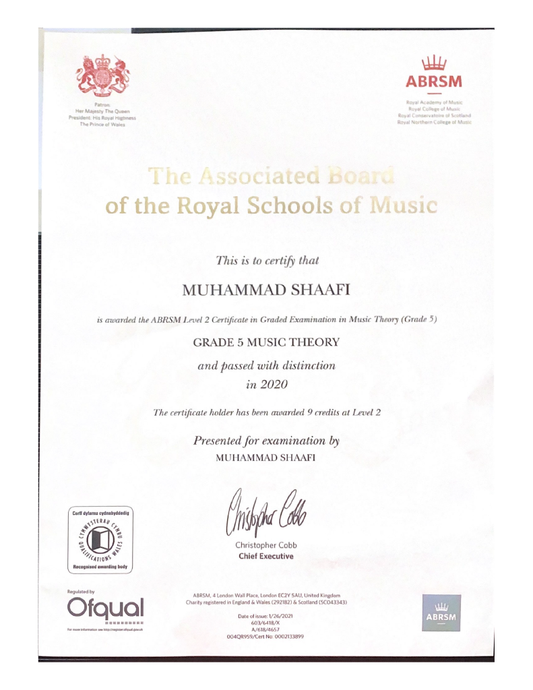
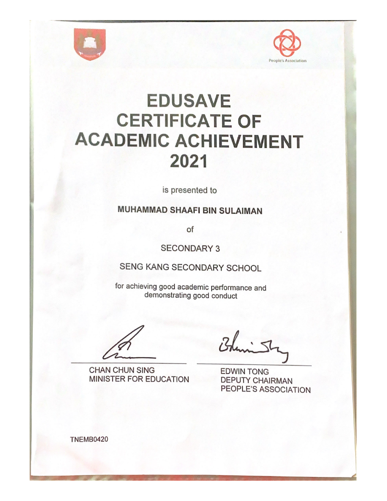

Directors List
This certificate was awarded to me for my good academic performance in Nanyang Polytechnic.

I passed my music theory grade 5 examination with a distinction. While attending piano lessons at YAMAHA Music Centre, I put in a lot of effort to ensure that I know about my music theory. I practiced a lot and did a lot of assignments to be prepared for the examination. With all these efforts, I am proud of myself that I was able to get a distinction.
I achieved a distinction for my Grade 5 piano examination. While attending classes from YAMAHA music centre, I practiced a lot to ensure that I was able to play the pieces without mistakes and fluently. It took a lot of time and effort but it was worth it in the end.
This certificate was awarded to me for my good academic performance in Seng Kang Secondary School.
This certificate was awarded to me for my good academic performance in Nanyang Polytechnic.